Loja física no Itaim Bibi
Materiais para drywall, reparos, elétrica, hidráulica e manutenção.
A AMM atende obras, reformas, condomínios, apartamentos, lojas e pequenos reparos com atendimento direto, produtos essenciais e localização fácil na Rua Tabapuã.
Vitrine AMM
Linhas e marcas que você encontra na loja
Veja algumas linhas de produtos que trabalhamos. Consulte disponibilidade e valores pelo WhatsApp.
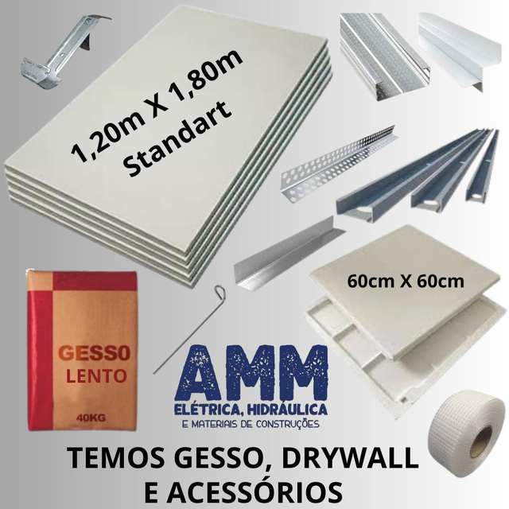
Drywall, gesso e acessóriosChapas, guias, montantes, massas e fitas. Clique para calcular.
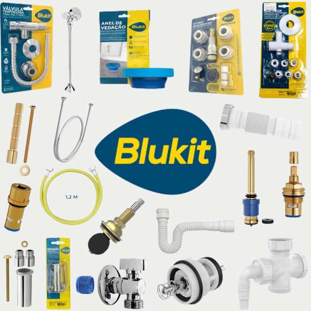
Blukit e Kit FácilReparos hidráulicos e manutenção
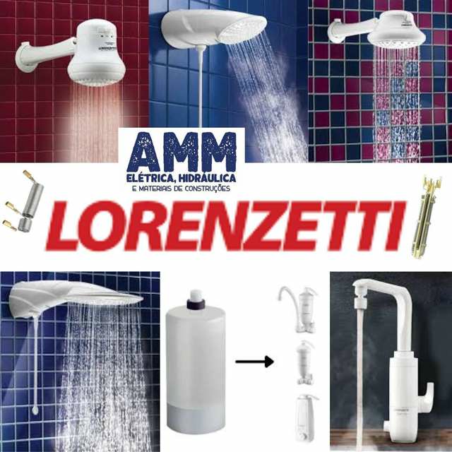
LorenzettiChuveiros, duchas e reparos
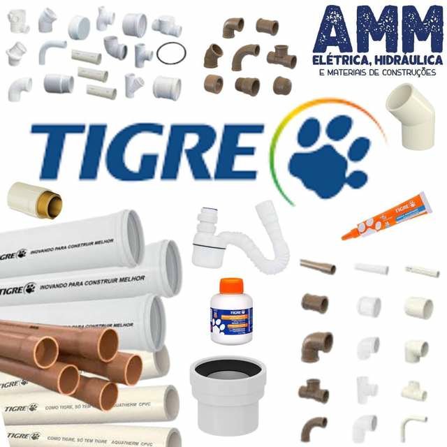
Tigre hidráulicaTubos, conexões e acessórios
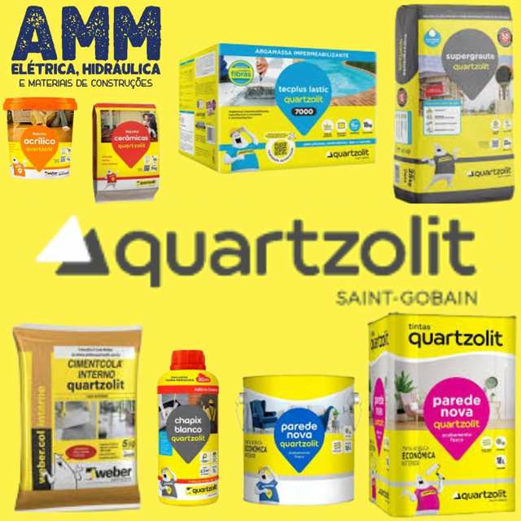
QuartzolitArgamassas, rejuntes e impermeabilizantes
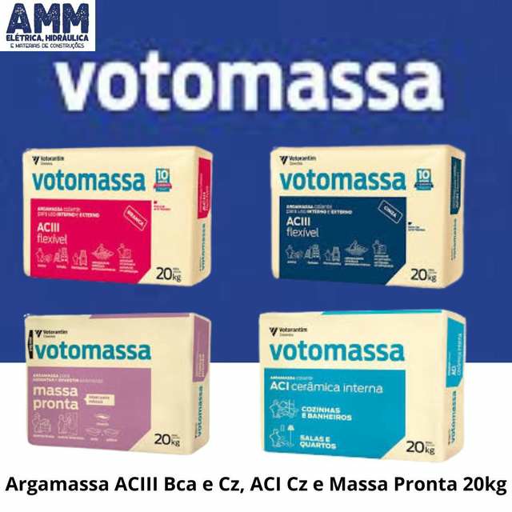
VotomassaArgamassas ACIII, ACI e massa pronta
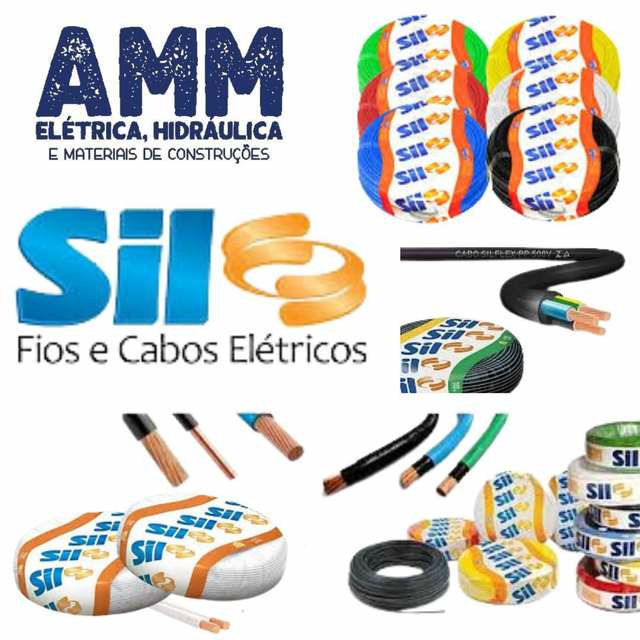
Fios e cabosElétrica para reformas e manutenção
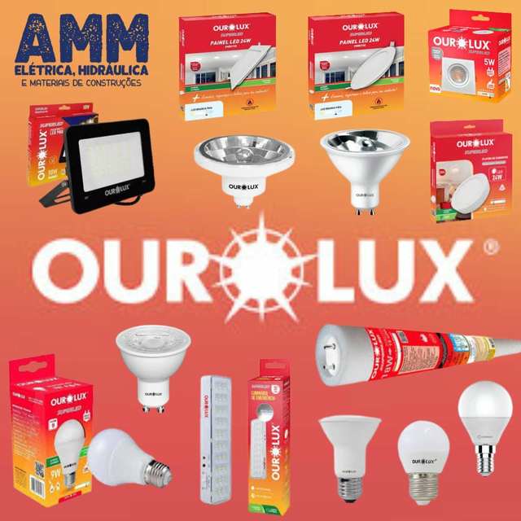
IluminaçãoLâmpadas, refletores e painéis LED
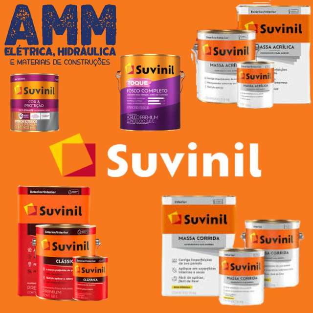
Tintas e massasSuvinil, Lukscolor e complementos
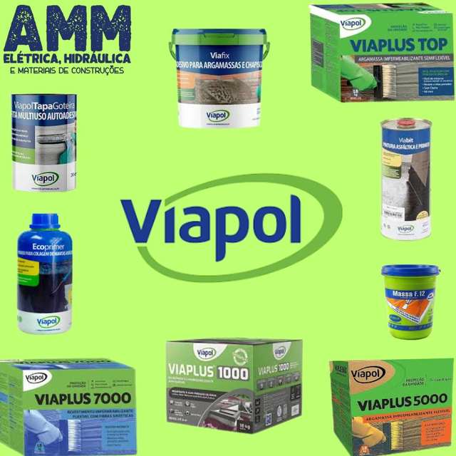
ImpermeabilizaçãoViapol, Vedacit e produtos similares
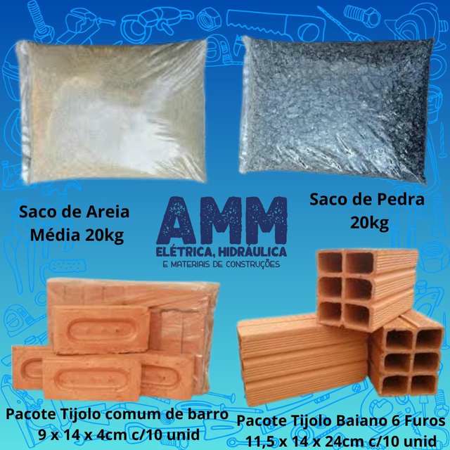
Tijolos, areia e pedraTijolo baiano e tijolinho comum. Clique para calcular.
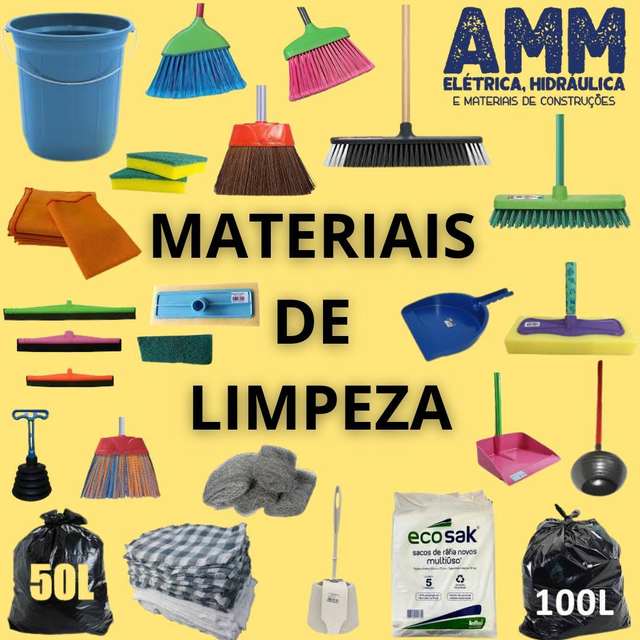
Materiais de limpezaItens úteis para obra, casa e condomínio
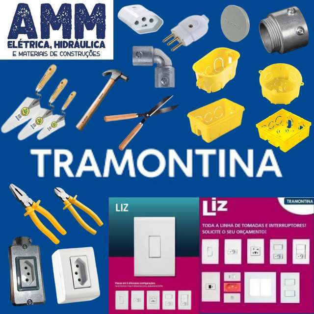
Tomadas, interruptores e ferramentasElétrica, instalação e ferramentas
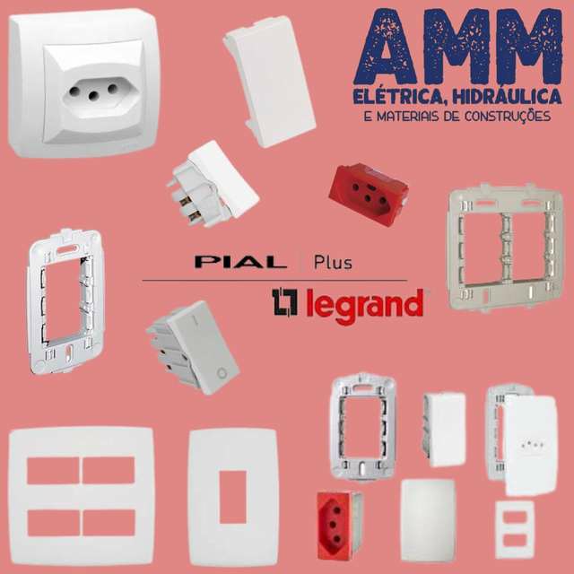
LegrandTomadas, interruptores e linha Pial Plus
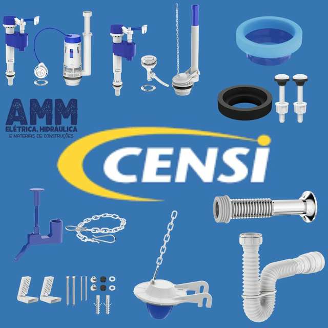
CensiReparos para banheiro, cozinha e manutenção
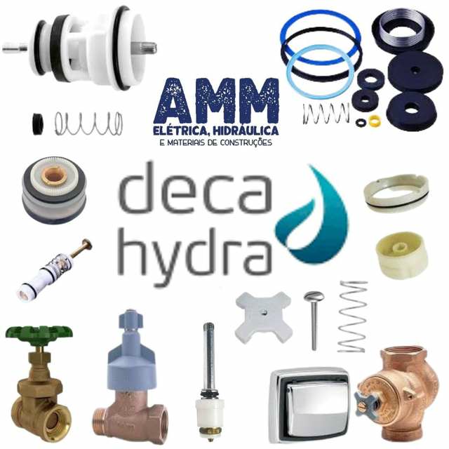
Deca HydraReparos, válvulas e peças hidráulicas
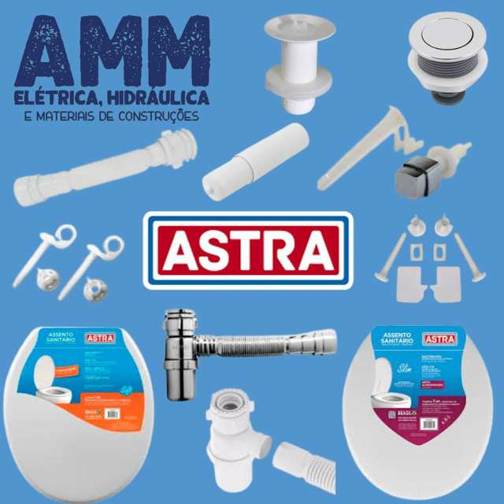
AstraAssentos, sifões, válvulas e acessórios
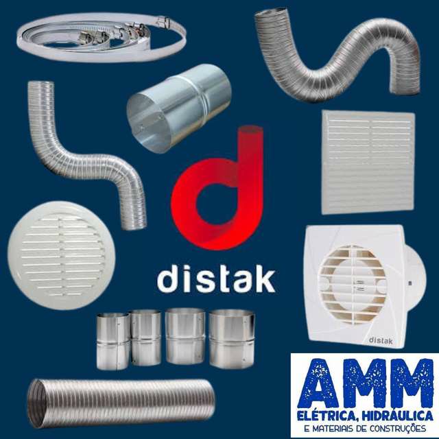
DistakDutos, grelhas e acessórios de ventilação
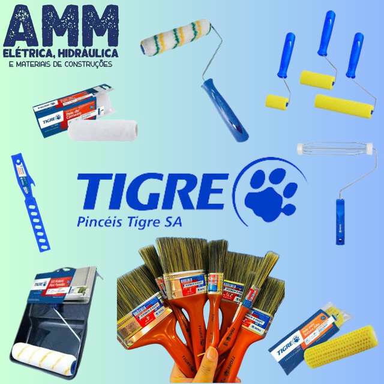
Tigre PincéisPincéis, rolos e acessórios de pintura
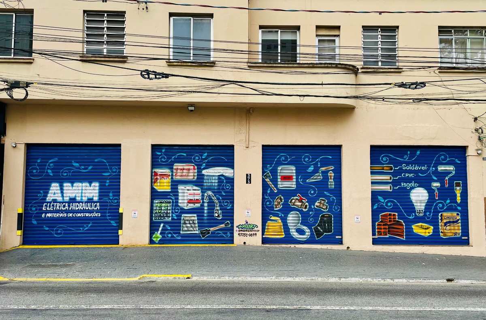
Loja física
Estamos na Rua Tabapuã, no Itaim Bibi.
A AMM é uma loja física de materiais de construção com atendimento local, ideal para quem precisa resolver compras de obra, manutenção e reparos com rapidez.
Horário de funcionamento
Estamos prontos para atender você
Segunda a sexta-feira
das 07:30h às 18:00h
Sábados
das 07:30h às 13:00h
Domingos e feriados
Fechado
Localização
Como chegar na AMM
Rua Tabapuã, 373 - Itaim Bibi - CEP: 04533-011 - São Paulo/SP
Abra a rota no seu aplicativo
Use o Google Maps ou o Waze para chegar com mais facilidade até a loja.
Fale com a AMM
Precisa consultar preço, estoque ou montar um pedido?
Chame no WhatsApp e envie sua lista de materiais.